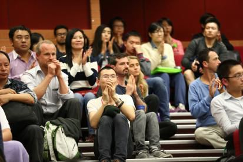
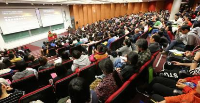

佛教的物质世界观——澳大利亚悉尼大学演讲
『2014年10月16日』
主持人：
女士们、先生们，大家晚上好。非常荣幸我们能邀请到索达吉堪布仁波切，首先我代表组委会欢迎堪布来到悉尼大学。
堪布今天为我们带来的演讲是“佛教的物质世界观”，这个主题最近很受关注，而且非常贴近生活，因为物质世界观会影响我们对生活的理解以及价值观的选择，还会影响我们人生的其他方面。
现在有请悉尼大学佛学社主席艾莉森致欢迎辞。
艾莉森主席：
尊敬的各位老师，以及各位同学，我谨代表悉尼大学佛学社向索达吉堪布仁波切致以最热烈的欢迎。我们都非常感恩您今晚能来到这里！也感谢各位加入这个美好的夜晚。
今天是周四，对吗？我知道在座有些人最终选择牺牲购物时间来到这里，但要是今晚没有你们的参与，这个大厅不会如此充满活力，也不会有这样共同学习佛法、将堪布的智慧融入自心的绝好氛围。
如主持人所讲，今天索达吉堪布将与我们分享一个非常有趣的题目“佛教的物质世界观”。对世上的每个人而言，没有一天不与物质世界打交道，但是我们是否真正认识了物质世界？它将来会变成什么样，我们知道吗？当然不知道，所以我用了万能的谷歌搜索了“物质世界”，因为我确实不太明白这个题目。这是谷歌搜索的结果：物质世界是指由人类创造、改造的物品、理念和实践，其本体为物质。
有意思的是我们创造了这些没有生命的物质，然而它们却拥有影响和控制我们思想、感受和情绪的能力。
那么在接下来的时间中，让我们关闭手机、合上电脑、放下杂念，打开心扉，抛开尘世中的琐事，步入宁静的心灵世界——

今天跟大家探讨“佛教的物质世界观”，也就是从佛教的视角看物质。
其实对于这个世界，不论用佛教的方法还是科学的手段，只要能揭示它的真相，就是值得关注与追求的，因为获得幸福、远离痛苦是每个人最为关心的，而只有认识世界的真相，才可能真正实现这一目标。
也许今天在座有些人对佛教不太了解，也没有信仰，但是如果你真正去研究它，就会发现：两千多年前，人类东方的思想竟然如此成熟，智慧竟然如此先进，丝毫不滞后于现代科学的脚步。
世间的很多知识都在不断更新，比如在我的家乡，学校里的教材几年后就会翻新，一些国家政策、名人言语，一段时间后也会过期；而古老的佛教却不是这样，不论它的何种理念——慈悲、智慧还是平等、和平……直至今天都依然散发出新鲜的活力。
一、佛教眼中的物质
那么今天我们就了解一下佛教对物质的观点。
首先我们要知道，佛教有四个宗派——有部、经部、唯识宗和中观宗，这四个宗派对物质的看法不尽相同，依次是一个比一个高超，上上的见解可以驳斥下下的观点。不过不论哪个宗派都认为：未经观察时，我们见到、听到、接触到的事物是存在的；一旦详加观察，就会发现它们并不真实，并非我们所想象的那样美好或实在。
刚才我听到佛学社主席说物质世界由人类创造，但却控制了人类的心。这听起来很稀奇，不过却是事实。而对于稀奇之事，佛教是最愿意剖析的。大概六百多年前，有一位佛教大师龙钦巴曾说：一切法虽然不存在，却可以无欺显现，这非常稀奇。这句话很值得大家思考。
那么物质世界还有什么稀奇之处呢？今天我会一一介绍佛教四宗的看法，同时结合现代科学的个别观点，作一些阐述。
有部与经部
首先是处于佛教宗派最底层的有部和经部，他们认为物质世界由地、水、火、风四大构成。这四大并非一般人所谓的大地、海水、火焰……而是四种所触：地大是坚硬性，水大是湿润性，火大是温热性，风大是动摇性。
这方面，现代科学也有类似的观点，认为世界依靠地水火风四种元素而形成。
有部和经部还有一个重要观点，认为物质有一个不可分的最小单位——无分微尘或极微。他们认为极微必须存在，否则整个物质世界就无法显现。
爱因斯坦在有些著作里说：物质不断分割，变成分子、原子，再细分，变成原子核、质子、夸克等，最终几个夸克粘连在一起的细微事物必须存在。现在也有些物理学家认为场或能量必须存在，否则粗大的事物无法呈现。这些观点跟有部、经部的观点有些接近。
讲到这里，有些人可能心生疑惑：世界怎么会是这些细微的东西？我明明看到瓶子、桌子、房子……
当然，佛教也不否认这些粗大现象，但是这些现象经不起智慧的观察，只是一种虚假的存在。比如眼前的瓶子，一般人都认为它存在，但是用锤子打碎后，就只剩下一堆玻璃片，瓶子在哪里呢？继续把这些玻璃片打碎，就变成一堆粉末，再不断分割下去，就变成一堆微尘。如果瓶子真的存在，在这堆微尘中，哪个是瓶子？由此就知道：所谓的瓶子并不真实存在。
外在的任何事物，如果用以上智慧去剖析，都会发现它们本质上只是一些微粒，由组合方式不同而导致形状与颜色的差异。因此真正去观察很多美好事物时，人们会失望的。
按照有部与经部的观点，不仅物质有一个最小单位，心识也不例外。心识的最小单位是无分刹那，它是粗大心念存在的基础。
唯识宗
比有部、经部更高一些的是唯识宗。这一宗派认为无分微尘并不存在，为什么呢？唯识宗论典中这样分析：
无分微尘组成粗法时，它的东南西北上下必定要围绕六个无分微尘，那么中间的微尘与周围的微尘是否接触？如果不接触，就证明它们之间有空隙，那么空隙中还可以继续放入无分微尘，因为无分微尘没有体积（不可分之故），乃至放入无数无分微尘也无法填满，最终须弥山都可以放在两个微尘之间，这显然不合理。如果承许中间的微尘与周围的微尘接触，那么是全分接触还是部分接触？如果全分接触，六个微尘就融入中尘，无法形成粗法；如果部分接触，中尘就变成可分——接触的部分与不接触的部分。通过这种观察就知道无分微尘是不存在的。
听懂了没有？今天我们上“物理课”。（众笑）
刚才说无分微尘不存在，那么有些人认为应该存在一种能量作为最小单位，对此也可用上述的方法破析。
我曾经也跟德国、美国的一些数学家、物理学家，就物质的最小单位做过探讨，了解到科学界目前对此并没有存在或不存在的定论。
按照佛教唯识宗的观点，物质世界看似是无情法，实际却是心识的体性。《华严经》对此有形象的描述：“心如工画师，能画诸世间。”我们的心就如同一位画师，他的画艺非常精湛，甚至可以绘画出整个世界。《大乘本生心地观经》中也讲：“心清净故世界清净，心杂秽故世界杂秽。”
其实唯识宗的观点非常相应于生活，在生活中每个人的习气不同，对于美丑的认知也不同，这一点在唯识宗的眼里，就是所谓的“万法由心造”。正因如此，整个世界跟梦境没什么差别——昨天以前的事是昨晚的梦，明天以后的事是明晚的梦，大家现在也正在做梦，没有任何理由说这一切不是梦。
法国物理学家笛卡尔曾深有感触地说：“我怎么知道我不是在做梦？我又凭什么将梦境和现实区分开呢？世间上包罗万象、形形色色的东西，虽然一个也不成立，但却能在眼前无欺显现。因此，完全可能有一个魔鬼，一直在欺骗我，让我不知道什么时候是真的、什么时候是假的。”
其实万法由心造的观点，在科学界可以找到很多证据。
英国天文学家、数学家爱丁顿，曾于1919年撰作了“重力的相对理论报导”，第一次向英语世界介绍“广义相对论”，而他一生撰写了多本著作，比如《物理世界的本质》（The Nature of the Physical World by Arthur Eddington），其中非常明确地指出外在世界是人的念头，书中说：让物理学家接受每个事物的基础都是心灵，是困难的，但是没人能否认心灵是我们经验中最初和最直接的东西，所有其他一切都是遥远的推断。此书在当时的科学界引起极大轰动。
爱丁顿的观点跟传统物理观念可谓天壤之别，但是跟唯识宗的观点却不谋而合。这值得大家思考——人们一直认为“物质在先、心识在后”，为什么20世纪的科学家却打破这种观念，提出“物质源于心识”的观点？
被美国《发现》《财富》《时代周刊》等传媒极力赞叹的生物科学家罗伯特·兰札，与著名天文学家鲍勃·伯曼，合著了书籍《生物中心主义》（Biocentrism by Robert Lanza & Bob Berman），提出这样的观点：这个宇宙是以意识为中心的，意识创造了宇宙。围绕这一观点，书中罗列了七个原理，其中一个这样说：“没有意识，‘物质’就处于一种不确定的概率状态中。任何可能先于意识的宇宙，都只存在于一种概率状态中。”书中还讲到：宇宙的结构、定律、力量等都是为心识服务的。
《生物中心主义》中的观点，跟佛教万法唯心的道理有接近之处，你们感兴趣的话，可以翻阅这本书做进一步了解。
总之，按照唯识宗的观点，物质世界并非无情法，而是心识的自性。
中观宗
站在中观宗的角度，唯识宗承许的实有心识或万法唯“心”，也是了不可得的。
《金刚经》中说：“过去心不可得，现在心不可得，未来心不可得。”过去心已经灭尽、未来心尚未产生，所以都不存在，那么现在心是否存在？很多人认为存在，但如果去观察它的本体，也找不到任何实法。所以，三时的心都得不到。
物质不存在，心也不存在，那是否成了一无所有？对此中观宗做了完美的解释：不论任何事物，仔细观察时都不存在，是空性的；但是空性的当下又可以有种种显现。也即“色不异空、空不异色、色即是空、空即是色”。
《楞严经》中也讲：一切万法剖析到最后是邻虚尘，对它进一步剖析，就是空性；虽然是空性，又可以显现色法。
其实真正观察时，不论外面的物质还是内在的精神，都会化为空性。那空性是否实有呢？也不实有，并没有一个实在的空性存在。所以，万法的实相就是佛教所讲的“远离四边八戏”。什么人证悟了这种境界，就是成就者、开悟者。
对于空性，科学迄今也无法企及，基本没有这方面的研究成果。究其原因，这跟它的研究方法不无关系，科学研究主要借助各种仪器与实验，这些很难真实触及人的内心。内心的证悟不必借助什么仪器，而是静下心去观察：“事物的本质是什么？有还是无？或者非有非无？”这一点并不难，不需要任何信仰，只需要用心觉照，就会有所发现。
万法虽是空性，但空性中积聚因缘，又可以显现一切。
对于这个道理，古印度龙猛论师在《缘起藏论》中以八个比喻进行描述：如同念经、明灯、明镜、印章、火晶、种子、酸味以及声音，任何因生果的过程中，因没有迁移到果中，果也并非不依因而生，只要因缘和合万法就会呈现。所以，这个世界不是常有的造物主创造，不是无因生，也不是非因生，而是因缘和合而生，也即缘起生。
缘起生的理论非常有趣，蕴含的义理极为甚深，也是佛教的独特观点，不过因为时间关系不能详述，你们如果想深入了解，可以参阅相关书籍。

二、两个希望
前面我对“佛教的物质观”作了简单介绍，下面提两个希望。
在座的同学都非常年轻，希望你们不断地学习。我总觉得任何一个人，不论处于何种环境——学校里、工作中或家庭里，对于有益于今生来世的知识，都要有一种渴求心，不断汲取、不断探求，要活到老学到老。人一旦停止了学习，其实跟死掉也差别不大。
还有一个希望是，大家要学会面对痛苦与挫折。人生的路并非坦途大道，而是弯弯曲曲、坎坎坷坷，所以要具备应对的能力。
我听说这里有种现象：小孩子走路时摔倒了，父母不会特意去扶，而是让他自己学着站起来。其实这包含着很好的教育理念。人不应该事事依赖他人，而应培养出坚强的毅力、独特的智慧，这样人生才能走得稳当、活得快乐。
三、结语
这里的很多人没有什么生活压力，也不需要面对激烈的竞争，过得非常悠闲、自在、快乐，这是值得羡慕的；不过作为人，都需要面对生老病死，所以眼光不应仅仅停留于短暂今生中的舒适生活，而应力图从生死中求得解脱。
最后我把自己很喜欢的一句话送给大家共勉，这是心理学家荣格所说的：若向外走，你会做梦，若向内走，你会觉悟。